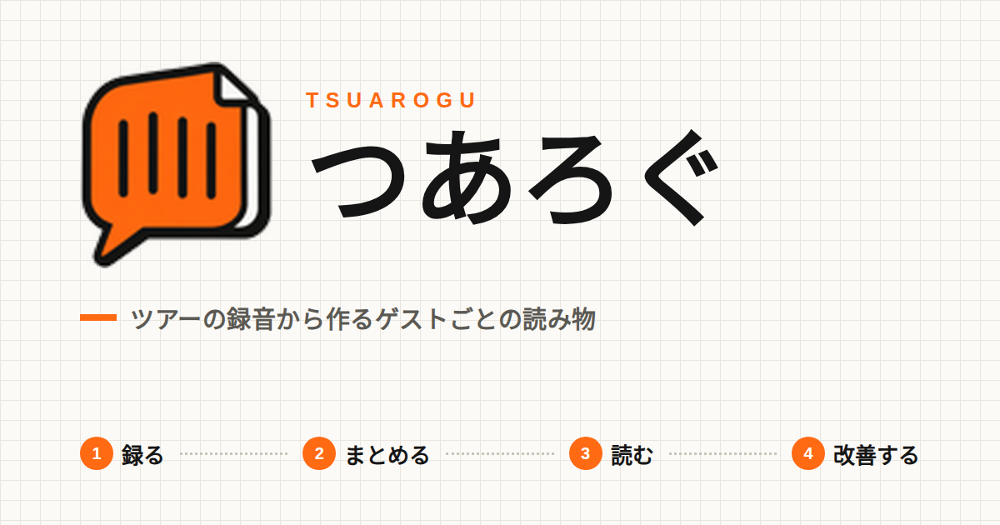
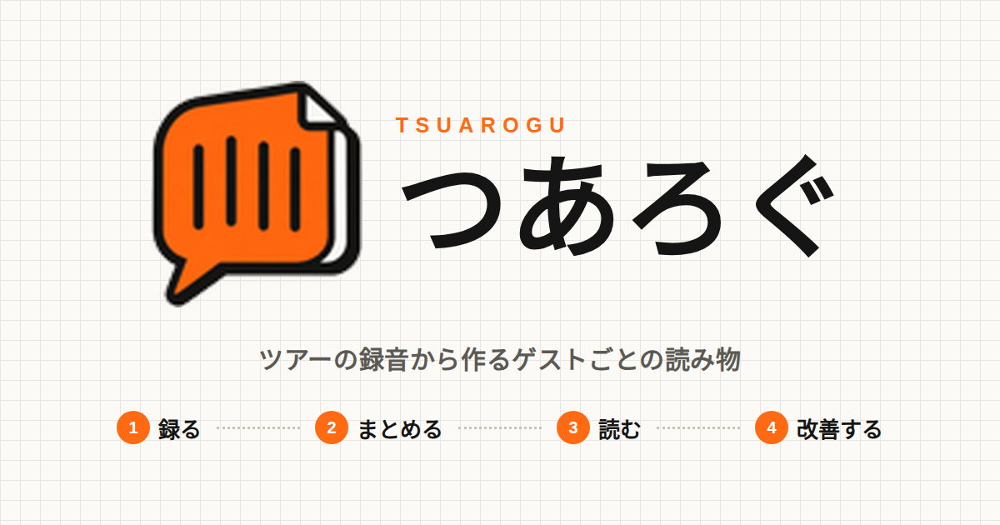
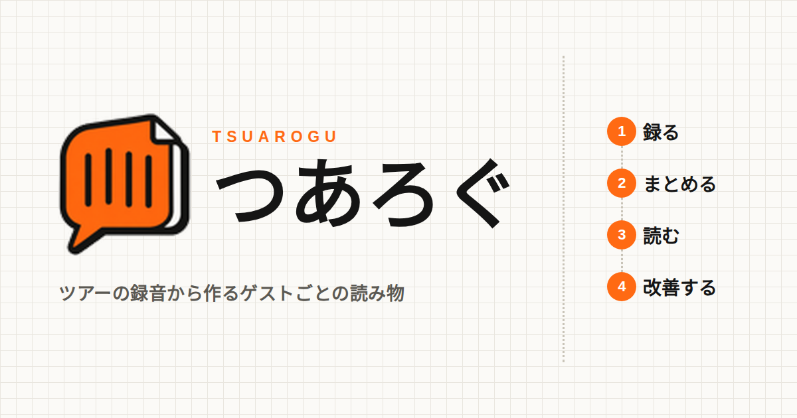
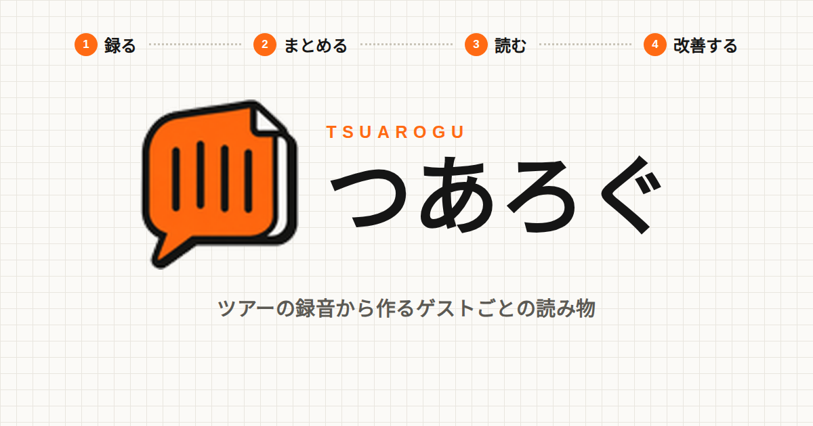
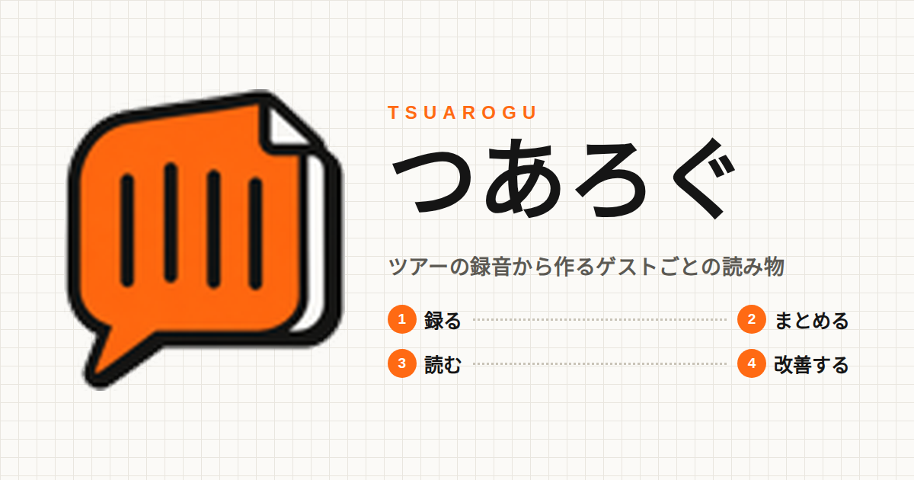

改訂版（案4系・ロゴ拡大＋概要入り）の方向のまま、配置バランスを考え直した5案です。各案 1200×630 の原寸で載せています。
ロゴ・タイトル・概要・ステップを全部、左の軸に統一した案。概要の頭にオレンジの短いバーを置き、ステップ帯は下端に。視線が左から下へまっすぐ流れます。

改訂版（ogp6）の中央組みを締め直した本命寄りの案。ロックアップ・概要・ステップ帯の幅を同じ柱に揃え、左右の余白と縦の間隔を均等にしました。

左にロックアップと概要、右にステップを縦の流れ（録る↓まとめる↓読む↓改善する）で置く二分割。点線の仕切りで面を分け、右側に余白の静けさが残ります。

ステップ帯を頭に細く置き、その下でロックアップを中央に大きく受ける案。先に手順が見えてから名前が来る、上下で役割の分かれた組みです。

ロゴをいちばん大きく左に置き、右カラムにタイトル・概要・ステップ（2×2）を積んだ非対称の案。ロゴの存在感が最大で、右側の情報がひとかたまりに収まります。
